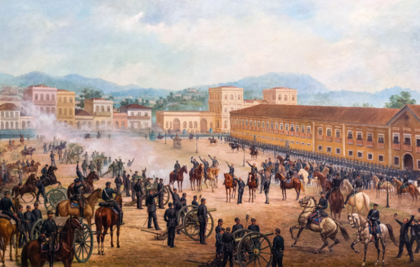

1880
Os militares se sentiram desvalorizados após a Guerra do Paraguai, e começaram uma série de conflitos com o governo, a chamada “Questão Militar”. Esta começou quando dois coronéis foram repreendidos pelo Império por declarações dadas à imprensa. O marechal Deodoro da Fonseca fez-se a principal coluna dos militares nesse momento.
A monarquia também perdeu o apoio da igreja, com a “Questão Religiosa”. O Papa mandou que todos os maçons fossem expulsos da Igreja, o Império negou, dois bispos contrariaram a decisão do governo e foram presos.
A abolição da escravidão via Lei Áurea constituiu inimizades entre as elites agrárias e o Império. Dessa forma, (quase) todos os setores da sociedade se viam insatisfeitos com a monarquia. Quase todos, pois o povo teve pouca ou nenhuma participação nesse movimento, afinal o republicanismo era impopular na época. Na última eleição parlamentar monárquica de 30 de agosto de 1889, dos 125 parlamentares, apenas 2 eram republicanos. Movidos também pelo positivismo, os militares tomaram o país por meio de um golpe que foi aceito de forma pacífica por Dom Pedro II
